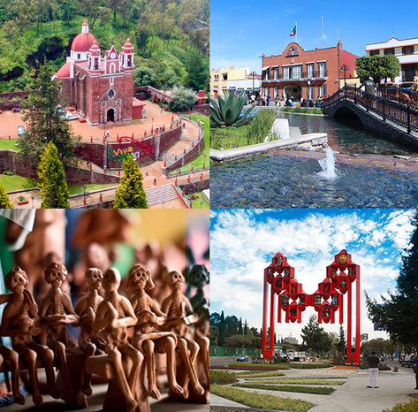

Informacion del lugar

Metepec, Pueblo Mágico del Estado de México (cerca de Toluca), es famoso por su alfarería, especialmente el "Árbol de la Vida". Destaca por su clima templado ( promedio), arquitectura colonial, el Cerro de los Magueyes y gastronomía local como la barbacoa y la bebida "garañona". Es un centro urbano moderno pero tradicional.